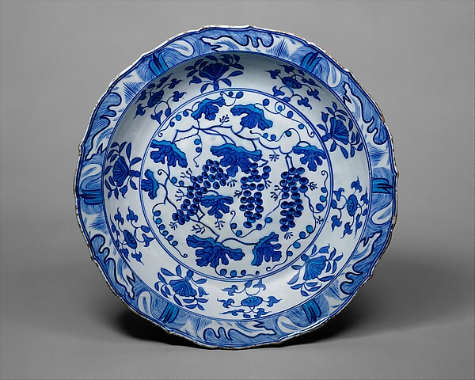

鉴 相似，是观察的起点；证据，让对话有迹可循。
完整元数据 · 阅读口径说明 ↓01 / AN ATLAS OF 4,312 RECORDS
万象 · 数据图谱
从全景发现结构，从结构走近器物。
每一次点选，都是一条新的观察路径。
计数单位为原表记录，尚未合并同馆藏编号。
所有图表与下方结果表联动。
A / THE CONSTELLATION
万象星图
每一点，一条馆藏记录。悬停细读，点击走近。
B / ACROSS THE CENTURIES
年代叠流
以区间中点归入世纪，每条记录只计一次；颜色表示机构。
C / LAYERS OF THE COLLECTION
藏品年轮
内环看机构，外环看材料。点击扇区逐层下钻。
READING THE RINGS
结构的另一面
与年轮相同的数据，用长度精确比较。
主材料按材质字段的明确词汇归类，混合材料采用已公开的优先规则。原始描述保留在详情中。
D / THREADS OF MATERIAL & CRAFT
器物经纬
流带越宽，记录越多。沿机构、主材料、主工艺看分类交织。
← 左右滑动查看三列完整流带 →
E / SHARED MOTIFS, DIFFERENT CONTEXTS
同纹异藏
比较不同馆藏的纹样主题，气泡面积表示记录数或占比。
← 左右滑动比较全部机构 →
正在载入完整官方记录…
02 / DIALOGUES WITH EVIDENCE
互鉴有据
从视觉上的相遇，走向有来源的理解。
以下是馆方解读中的三个观察切口。
全集已接入，计数单位是什么？
全部4312条官方元数据记录均已接入。Main_ID唯一；原表存在同馆藏编号重复记录，故统计单位为“记录”，不等于去重后的实物数。保留8种原始机构标签，不擅自合并机构名称。完整图片包已下载，4312张原图与记录全部关联；详情提供原图入口。
年代与纹样主题如何处理？
以规范化年段绘图，11条原始缺失及1条冲突待核保留；202条明确原文年段已规范化，原数值列仍可追溯。年代叠流采用中点归箱；筛选采用原区间相交。纹样主题依据名称和Metadata中的明确词汇整理，并非逐张图片识别；可在藏品详情查看文本出处。相似主题不自动证明历史传播。
研究案例与官方统计如何区分？
下方三个研究案例独立取自The Met官方记录，用于解释互鉴，不加入4312条官方统计。每条官方记录提供Main_ID、原表行号与原始字段。中文机译及字段差异需要结合原文核查。
查看数据审计 ↗ · 官方数据获取记录 ↗